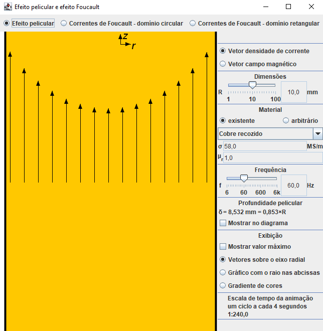

Physique
Effet de peau et courants de Foucault
En coopération avec
José Roberto Cardoso

[Launch]
Références
Pertes supplémentaires dans les conducteurs pour forte intensité par effets de peau et de proximité